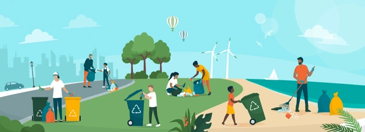

Be the Change in Your City.
Your voice matters. Report civic issues, track their resolution, and help build a better, more responsive community with City Hawk.

Your voice matters. Report civic issues, track their resolution, and help build a better, more responsive community with City Hawk.